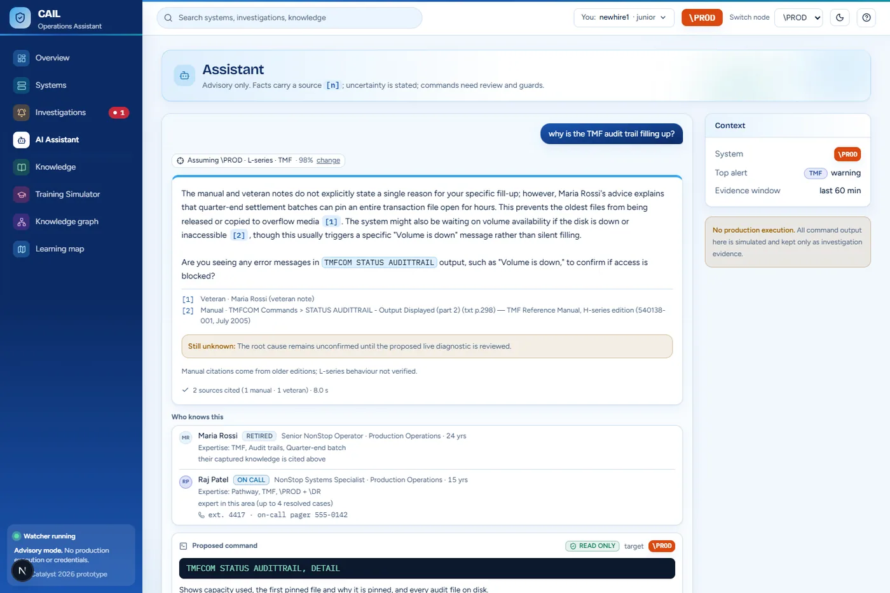
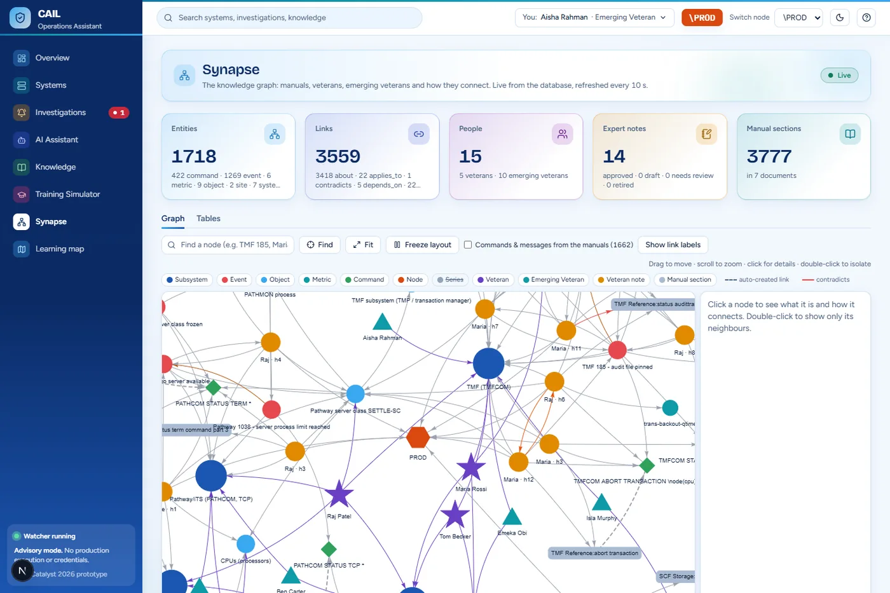
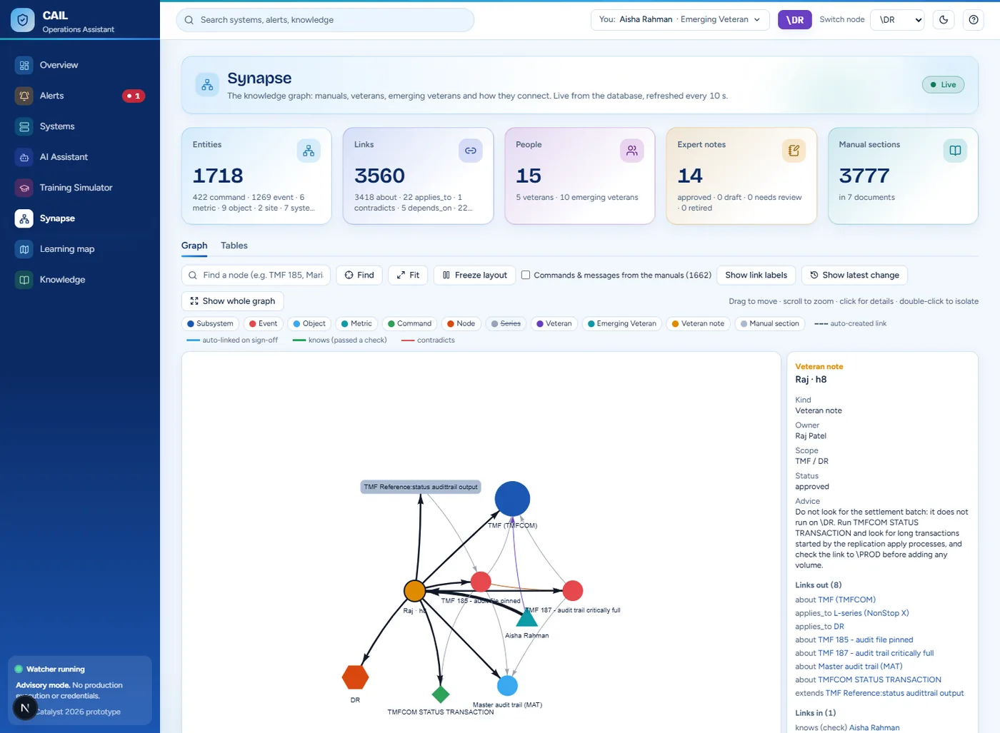
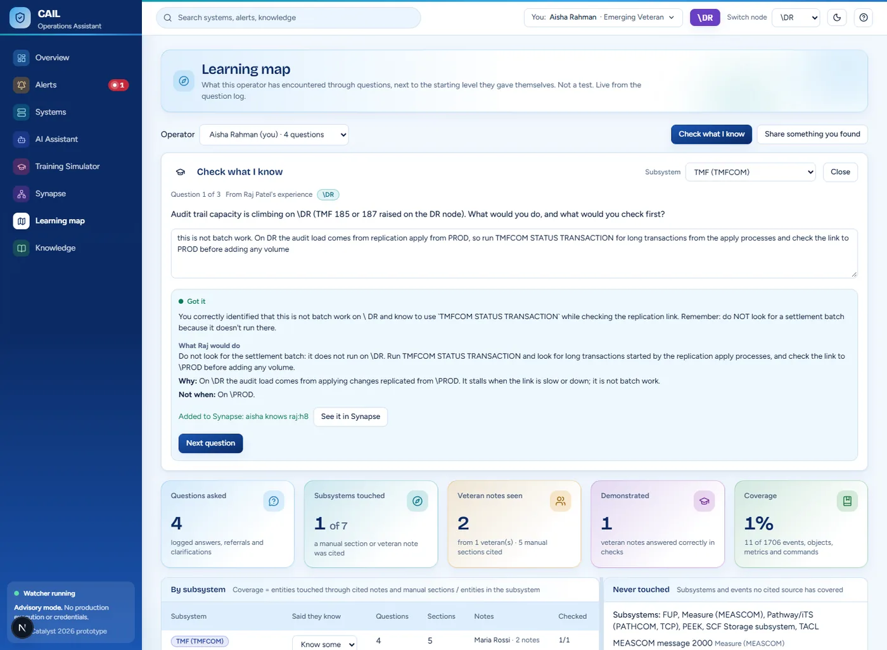
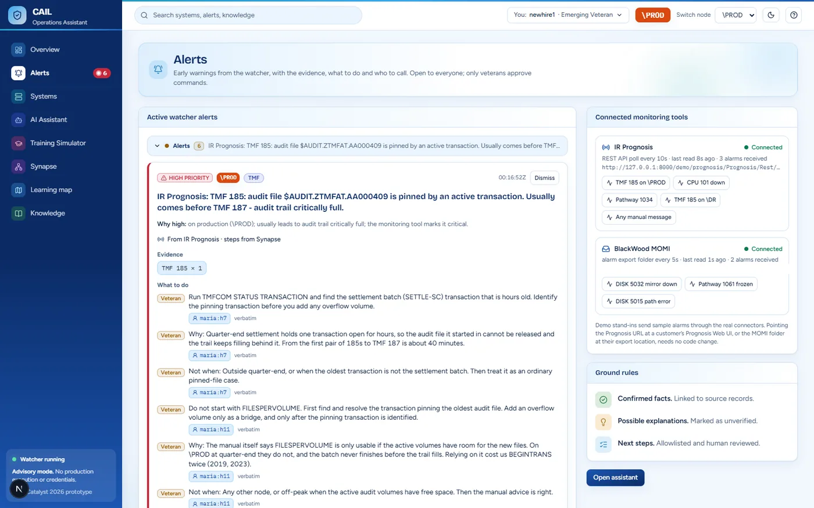

Placement
2nd
An AI operations assistant that keeps senior engineers' knowledge and helps junior IT operators run mission-critical systems. Every answer cites both the exact manual section and the named senior expert it draws on, and it all runs fully on-prem.
Code available on request.
CAIL makes connectivity and terminal-access software for mission-critical systems, including HPE NonStop: the fault-tolerant platform behind many bank ATMs, card payments and telecom systems. Their challenge: use AI to help the next generation of operators understand, monitor and troubleshoot these systems in natural language, while preserving the expertise of experienced professionals.
At one bank, 5 of 20 senior operators retired within six months. The manuals exist, but the practical judgment ("never do X first at quarter-end") is in nobody's PDF.
CAIL's top concern was context. In their words: "System A and B have the same buttons." The same command can be right on the production node (\PROD) and wrong on the disaster-recovery node (\DR).
The hard part isn't answering questions. It's answering them for the right system, with the senior's judgment attached.

Ask in plain English. Every answer cites the manual section and the senior expert ("Veteran") whose knowledge it uses, says when the sources don't cover a question, and is strictly scoped to the node, release and subsystem you're on.

1,700+ nodes, 3,500+ links. Commands and messages are extracted from the manuals, signed notes auto-link to what they mention, and juniors' questions and passed checks create "learned from" and "knows" links, so you can watch knowledge flow from Veteran to junior.

Seniors teach by talking in a "Teach" chat. The AI drafts a structured note (when / do / why / when not), and only the owner can sign it. Unsigned knowledge is never used.

A per-person learning map (seen vs. self-rated vs. demonstrated), knowledge checks graded against the senior's own notes, and a guided training sandbox that records nothing.

A rule-based watcher fires a named senior's warning pattern before a failure (e.g. "about 20 minutes before Pathway stops serving ATMs" after a CPU failure), with High/Medium/Low priority and a plain-English reason. Connectors read alarms from IR Prognosis (REST) and BlackWood MOMI (exports); fix steps come from the graph.
Proposed from a verified catalog, risk-labelled and dry-run on a simulator. Only a senior can approve; critical commands need a second approver. Simulation only.
Three kinds of source feed one database. The graph, vectors, notes, people and learning logs all live in PostgreSQL 16 + pgvector, and four services sit on top of it behind a single operator console.
Pin the question to the operator's node and release series before anything is retrieved, so \PROD knowledge never answers a \DR question.
Search the manuals with vector + keyword search merged by Reciprocal Rank Fusion, plus vector search over signed expert notes for that node only.
A cross-encoder reranker keeps the top 5 sources.
One local LLM call that must cite its sources as [n].
Map citations back to sources, suggest who to call from the graph, and log the question to the learner's map.
Early warning is plain code, not AI, so it's explainable and testable: expert pattern rules, "comes before" chains in the graph, and metric-trend projection.
Every claim cited. Context never leaks. Nothing runs without a senior's approval. Fully on-prem.
| Frontend | Next.js 15 · React 19 · TypeScript · Tailwind CSS · vis-network |
| Backend | Python · FastAPI · uvicorn |
| Data | PostgreSQL 16 + pgvector (graph and vectors in one database) |
| AI (local) | Ollama on a 6 GB RTX 4050 · Qwen 3.5 4B · embeddinggemma · MiniLM cross-encoder |
| Infra / testing | Docker Compose · pytest (191 unit tests) · Puppeteer |
Measured on our own 60-question evaluation set.
Several sponsors each posted a problem, with up to six teams per problem. We placed 2nd overall, by a narrow margin. During judging, a judge tried to break the assistant with a live prompt-injection attempt, and it held.
Real: the HPE NonStop manuals. Fictional: the senior experts and their notes, written for the demo and tied to real manual sections. Simulated: alarms, metrics and command output. The connectors follow the vendors' documented formats but were tested against stand-ins, not a live customer system.
Synapse was Team #31's entry, and I built the whole system: the architecture, the FastAPI backend, the ingest pipeline and RAG, the knowledge graph, the early-warning watcher and connectors, the safe-command flow, and the Next.js operator console.
We're developing Synapse into ongoing research: a larger benchmark, comparisons with and without context scoping, a second domain to test generality, and a user study with real operators.